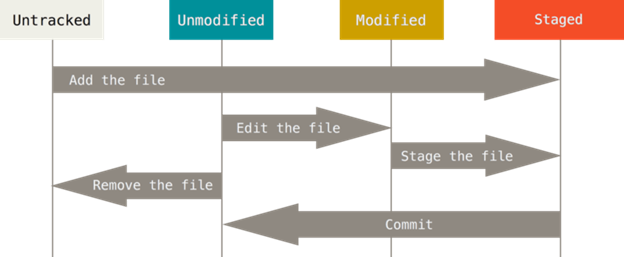

Review Git
- Apa itu Version Control System
- Apa itu Git
- Dasar-Dasar Git
-
Git hanya menyimpan `snapshot` bukan `setiap perubahan` pada project: Git hanya berpikir untuk menyimpan snapshot yang akan ditautkan ke file yang sudah tersimpan.
-
Hampir setiap operasi berada di local: Git tidak perlu terhubung ke server untuk mendapatkan history dan menampilkannya cukup membaca langsung dari database lokal.
-
Git memiliki integritas: Git akan melakukan pengecekan isi dari sebuah file, sehingga gitmengetahui semua file yang sudah dilakukan pengecekan.
-
Git pada umumnya hanya menambahkan data: Setiap perubahan yang di commit pada sebuah file hanya akan menambahkan data ke database git (sulit untuk kehilangan data).
-
Git memiliki tiga status: `committed` (data sudah tersimpan di database), `staged` (menandai pada file yang mengalami perubahan) dan `modified` (perubahan file belum ditandai)
- Instalasi Git
-
Instalasi git pada Linux Fedora bisa menggunakan $ yum install git, sedangkan pada Linux Ubuntu bisa menggunakan $ sudo apt-get install git.
-
Instalasi git pada MacOS bisa menggunakan $ brew install git (pastikan sudah terinstal homebrew).
-
Instalasi git pada Windows bisa dengan mendownload installer git pada laman installer (https://git-scm.com/download/win).
-
Pastikan git sudah terinstal dengan menggunakan perintah $ git --version, maka akan menampilkan pesan versi dari git.
- Pengaturan Awal Git
-
Jalankan perintah $ git config --global user.name "Your name", contoh: $ git config --global user.name "Ahmad Yulianto"
-
Jalankan perintah $ git config --global user.email "Your email", contoh: $ git config --global user.email ahmad_yulianto@mail.com
-
Jalankan perintah $ git config --list untuk melihat hasil konfigurasinya.
- Repositori Git
$ git init untuk menginisialisasi repository git pada project, kemudian akan membuat folder `.git` yang berisikan semua file repository yang akan dibutuhkan git.
$ git clone https://github.com/abdur-rohman2883/learn-git untuk menduplikasi repository yang sudah ada, pada perintah tersebut akan menduplikasi project sesuai dengan namanya dan di dalam project tersebut sudah terdapat folder `.git`.
- Siklus Hidup File pada Repositori Git
Pada saat suatu file baru dimasukkan/dibuat di dalam repositori Git, statusnya adalah untracked.
Ketika terjadi perubahan terhadap file tersebut, semua perubahan masuk ke dalam staging area sehingga status filenya adalah staged. Artinya, Git mengetahui ada perubahan pada file tersebut, tapi perubahan tsb. tidak permanen disimpan pada repositori Git.
Kemudian dari semua perubahan tersebut, kita bisa memilih untuk commit perubahan yang mana saja. Commit di sini mirip seperti fitur save pada Microsoft Word, yaitu merekam snapshot file kita. Lalu status file tersebut berubah dari staged menjadi unmodified.
Jika kita melakukan perubahan terhadap file tersebut, maka status file kita akan berubah dari unmodified menjadi modified.
Jika kita ingin membatalkan perubahan tersebut, kita dapat menggunakan "git reset". Tapi jika kita ingin menyimpan perubahan tersebut ke dalam repositori Git, kita dapat menggunakan "git commit", kembali ke poin ketiga, dst.
- Berinteraksi dengan Git
Menggunakan Command Line Interface (CLI), yaitu dengan menggunakan keyword "git" pada command line, seperti yang telah dicontohkan pada Pengaturan Awal Git dan Repositori Git. Setelah kita menginstall git, kita tidak perlu install software lain untuk menggunakan CLI. Daftar lengkap command line git dapat dilihat pada laman ini: click here
Menggunakan Graphical User Interface (GUI), yaitu dengan software lain yang telah disediakan oleh Git maupun oleh pihak ketiga lainnya. Saya lebih memilih menggunakan GitHub Desktop sehingga tidak perlu lagi menghafalkan command git. Daftar lengkap software tersebut dapat dilihat dan diunduh di sini: click here
Version control system adalah salah satu kategori dalam tools perangkat lunak yang membantu software team dalam mengelola perubahan source code dari waktu ke waktu.
Version control system melacak setiap perubahan pada kode yang bilamana terjadi kesalahan, developer dapat kembali pada perubahan sebelumnya untuk membandingkan kode dan memperbaiki kesalahan pada kode tersebut tanpa harus mengganggu team lain yang sedang bekerja dalam satu version control system.
Git merupakan layanan gratis dan open source version control system yang terdistribusi untuk mengatur segala sesuatu dari project kecil sampai project besar dengan mengandalkan kecepatan dan efisiensi.
Berikut ini merupakan cara instalasi Git berdasarkan operating system yang digunakan:
Sebaiknya melakukan beberapa konfigurasi sebelum menggunakan git di dalam project, hal ini akan tetap ada walaupun git melakukan update. Berikut konfigurasi awal di dalam git:
Mendapatkan repository git di dalam project, bisa dengan menggunakan dua cara:
Setiap file pada work directory berada pada dua status: "tracked" atau "untracked". Tracked berarti file yang sudah berada di snapshot terakhir (unmodified, modified dan staged).
Penjelasan gambar:
Terdapat 2 cara untuk berinteraksi dengan git, yaitu: